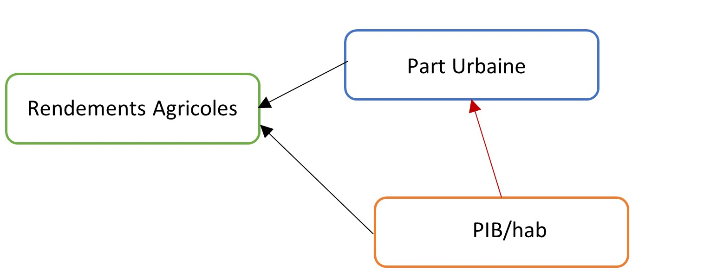

Dernière étape avant les présentations de vos projets. Il me semble important de bien préciser un point de votre cours avant que vous réalisiez l’analyse de vos résultats. Parlons du biais de variable omise.
Qu’est ce qu’un biais de variable omise ? C’est l’existence d’un biais (positif ou négatif) dans les coefficients estimés qui provient de l’omission d’une variable correlée avec Y et les X. Mais encore ?
Partons d’un exemple ! Tout sera plus clair.
Imaginons, pour la dernière fois du semestre je vous le promet, que l’on veut estimer… la relation entre la part de la population urbaine et les rendements agricoles. La relation bivariée s’écrira :
\(rendement\_agricole_i = \beta_0 + \beta_1 \times part\_urbaine_i + \epsilon_i\)
Comme vous pourrez facilement le noter, la part de la population urbaine n’est pas le seul facteur qui va influencer les rendements agricoles. Il existe une multitude de facteurs qui affectent les rendements agricoles - c’est à dire qui sont corrélés avec les rendements agricoles. Prenons l’exemple du niveau de richesse par habitant d’un pays: le PIB/hab. Si cette variable à un impact sur le niveau de rendements agricoles, alors le vrai modèle s’écrit :
\(rendement\_agricole_i = \tilde{\beta_0} + \tilde{\beta_1} \times part\_urbaine_i + \tilde{\beta_2} \times pib\_hab_i + u_i\).
En conséquence, l’effet du PIB/hab sur les rendements agricoles était capturé dans le premiere modèle par \(\epsilon_i = \tilde{\beta_2} \times pib\_hab_i + u_i\)
Rappelons nous que l’une des hypothèses de Gauss-Markov, qui garantie que la relation est causale, est : \(cov(\epsilon_i,X_i)=0\)
Or, s’il existe une relation entre le PIB/habitant et la part urbaine de la population, alors \(cov(\epsilon_i,X_i) \neq 0\). Cela va induire que l’on ne pourra pas isoler l’effet de la part urbaine sur les rendements agricoles, mais que celui-ci capturera également une partie de l’effet du pib/hab qui n’a pas été inclus dans le modèle.
La question que l’on se pose, c’est donc de comprendre l’impact de l’omission du PIB/hab sur le coefficient \(\beta_1\) que l’on a estimé.
Deux cas de figure :
Pas de biais de variable omise
 Comment savoir si \(\beta_1\) souffre d’un biais positif ou négatif ? La réponse va dépendre du signe de la relation entre la part urbaine et le pib/hab mais également du signe de la relation entre les rendements agricoles et le pib/hab.
| \(corr(pib\_hab_i,part\_urbaine_i)>0\) | \(corr(pib\_hab_i,part\_urbaine_i)<0\) | |
|---|---|---|
| \(\beta_2>0\) | Biais positif | Biais négatif |
| \(\beta_2<0\) | Biais négatif | Biais positif |
Le biais de variable omise est donc un outil utile pour choisir les variables de son modèle et aussi pour avoir un regard critique sur celui que l’on a construit.